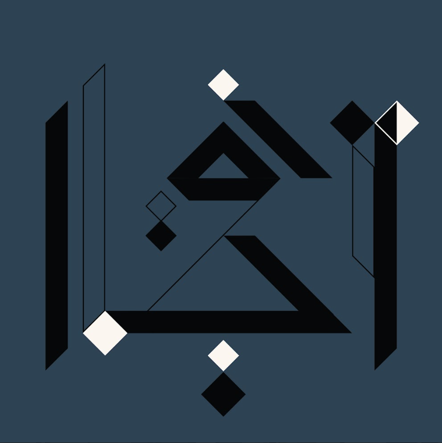
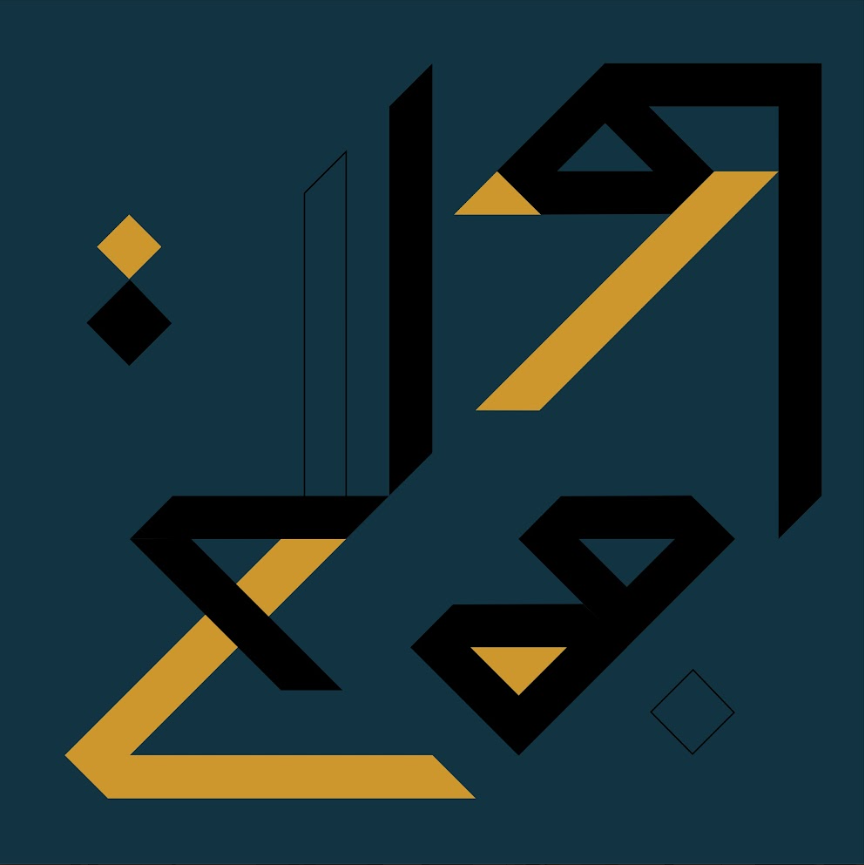
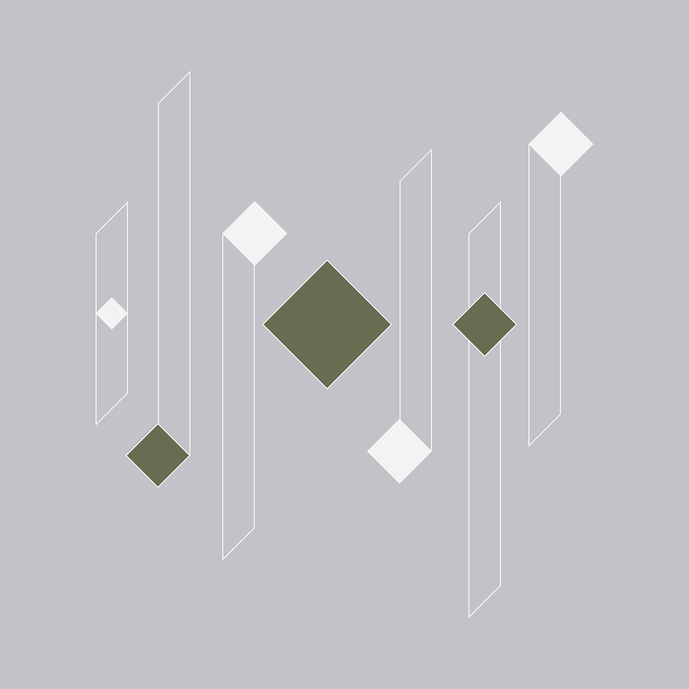
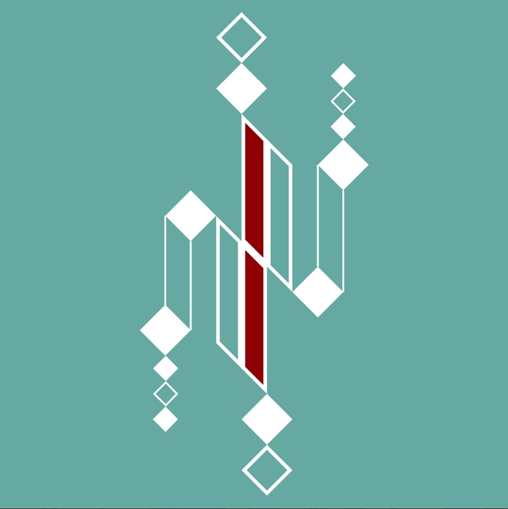
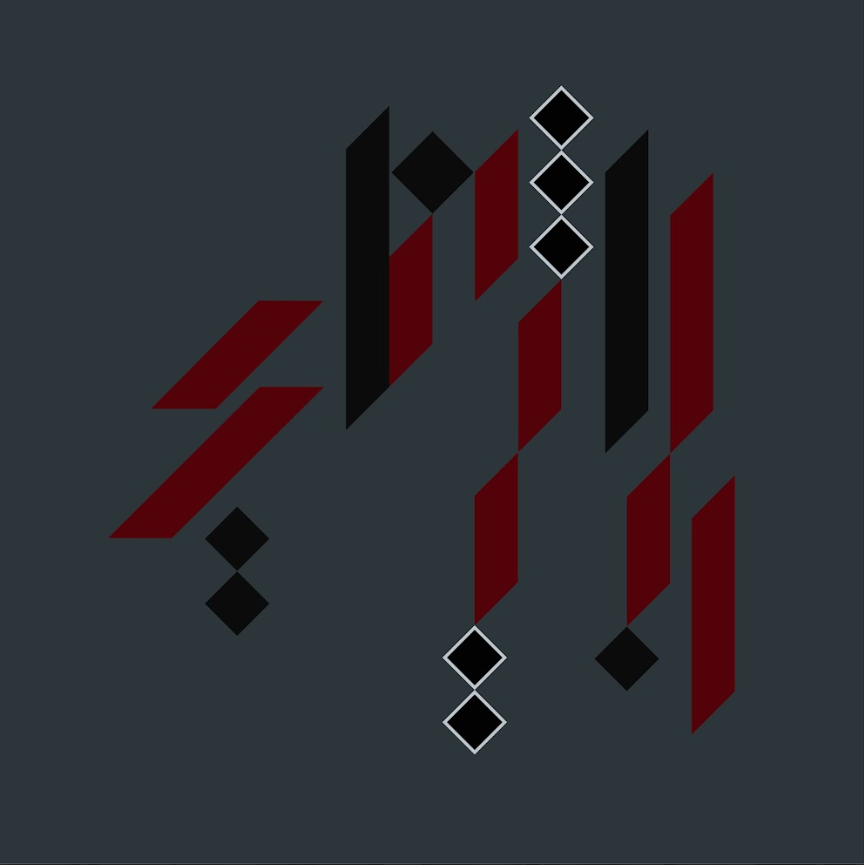
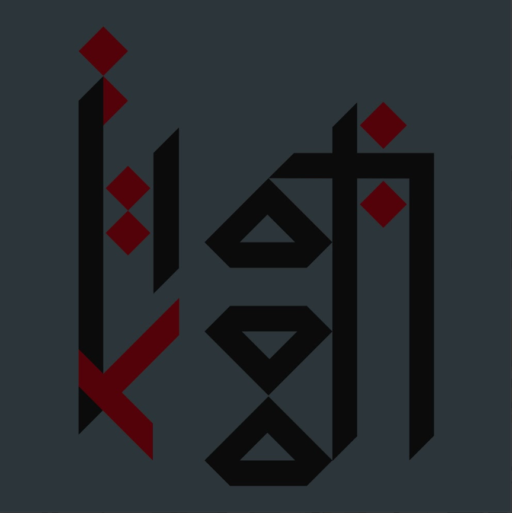

A Canvas That Listens and Responds
Sounding Canvas redefines what a painting can be. Rooted in Persian calligraphy and western music, each piece becomes both visual and sonic, inviting touch, resonance, and discovery. What may appear as a static composition is, in truth, a living interface. When touched, it sings. The painted surface responds with evolving sounds, transforming the viewer from observer into active participant. This project challenges the traditional divide between viewer and artwork. Here, the audience becomes a co-creator, and each interaction gives rise to a unique sensory dialogue.
Sounding Canvas embodies the spirit of a social sculpture: a living system shaped by human presence, dialogue, and shared gesture. Each touch activates not only sound, but a form of communication that transcends words, a way to say “I’m here” through vibration, rhythm, and silence.
Through real-time sound processes, adaptive technologies, and tactile perception, Sounding Canvas transforms the act of seeing into an act of listening and feeling. The painting becomes a responsive presence that evolves through interaction.
A Distributed Artwork
The current Sounding Canvas series is conceived as a distributed installation composed of multiple paintings that can interact with viewers and with each other. Each canvas functions as an independent interactive artwork, capable of establishing a direct sensory dialogue with the person touching it. At the same time, the canvases are designed to communicate remotely with other canvases in the series. Through this connection, an interaction taking place in one location can resonate within another artwork elsewhere. For this reason, the works are organized in paired relationships. Each pair forms a conceptual and technological link between two paintings, allowing gestures performed in one place to influence the sonic behavior of another.
This structure allows the installation to be presented across multiple exhibition spaces simultaneously, creating a distributed artwork in which distant viewers become indirectly connected through sound, gesture, and interaction. In this way, Sounding Canvas expands the idea of a painting from a single object into a networked artistic system, where images, sounds, and human actions form an evolving web of relations.
Paired Variations
Each pair establishes a dialogue between two paintings that are conceptually, visually, and sonically related. These relationships are not simple repetitions. Instead, each pair explores the idea of variation: one work transforms certain structural or perceptual principles of the other. Forms may shift, rotate, expand, or reorganize; similarly, the sonic behaviors of the canvases evolve according to corresponding transformations.
Because the Sounding Canvases are networked artworks, these relationships are not only conceptual. When exhibited in different locations, paired canvases can communicate remotely, allowing interactions occurring in one place to influence the sonic behavior of its counterpart elsewhere. The pairs presented below represent the current stage of the series. As the project continues to grow, additional pairs will extend this evolving cycle of variations.
Rhythmic Interference ↔ Calligraph of Absence
This pair explores how a visual structure can be transformed through processes of translation, rotation, and reorientation. Several compositional elements present in Rhythmic Interference are reorganized and reinterpreted. In particular, the geometry becomes more vertically oriented: forms are stretched, thinned, and repositioned so that the composition develops a stronger upward tension. The triangles, for example, now point upward, and the central elements guide perception along the vertical axis. The chromatic balance also evolves. The dark structural elements remain present, but the surrounding tonal relationships shift: the yellow tones of Rhythmic Interference transform into a much lighter cream. This inversion subtly redistributes the visual weight of the composition, producing a quieter and more contemplative atmosphere. These visual transformations are mirrored in the sonic domain. Geometric translations correspond to pitch shifts in the sound structure, while rotations in the visual forms are reflected as harmonic inversions around shared tonal centers. Through this correspondence, Calligraph of Absence generates a distinct but related sonic environment, an altered resonance emerging from the same structural foundation as Rhythmic Interference.
Calligraph of Absence

This piece layers sharp, calligraphic geometry with minimalist depth and shadow. Black, white, and blue-gray elements form a cryptic visual syntax, drawing inspiration from Persian aesthetics and sonic abstraction. As an interactive Sounding Canvas, it responds to touch with modulated sound, turning viewers into participants. Like the rest of the series, the work explores perception, language, and sound through tactile dialogue.
Rhythmic Interference

This artwork investigates the interplay of geometry, contrast, and rhythm. The structured arrangement of angular forms suggests a coded visual language, an architecture of movement and tension. Through interaction, the painting reveals a hidden sonic dimension, inviting viewers to engage not only visually but physically. The result is a dialogue between gesture, sound, and perception.
Echo of Lines ↔ Silent Score
In this pair, the transformation is less geometric and more structural and energetic. Echo of Lines presents a balanced composition where multiple sensory zones coexist without a single dominant center. The work distributes its sonic and visual activity across the surface, creating an equilibrium based on symmetry and dispersion. Silent Score, by contrast, introduces a strong sense of central attraction. The composition appears to radiate outward from a focal point, like waves expanding through space. Visually, the forms evoke fragments of a musical notation spreading across the canvas. The sonic relationship between the two works follows a similar trajectory. In Echo of Lines, the sounds move between different spectral densities and textures without strong temporal evolution, creating a suspended sonic field. In Silent Score, this latent potential appears to erupt into dynamic motion: rhythmic fragments, evolving harmonies, and temporal structures emerge from the center and propagate outward. Within the broader Sounding Canvas cycle, this pair represents a moment of transformation, a passage from static equilibrium toward dynamic expansion.
Silent Score

Inspired by musical notation and Persian calligraphy, this work explores rhythm, silence, and spatial tension through a constellation of floating forms and directional lines. The composition evokes the visual structure of a musical score waiting to be performed. Through touch-sensitive interaction, the canvas transforms this abstract language into a living sonic experience, inviting viewers to reflect on the relationship between sound, gesture, and form.
Echo of Lines

This piece bridges the ephemeral nature of sound with the permanence of visual form. Its geometric composition unfolds like a silent conversation between shapes, where interaction reveals an evolving sonic landscape. Touch activates hidden resonances that shift over time, transforming the painting into a responsive acoustic space. Each encounter produces a different configuration of harmonics and textures.
Script of the Unsaid ↔ Room Full of Chords
The third pair gathers and synthesizes many of the principles explored in the previous variations. The two works share a closely related visual language, yet their spatial organization diverges significantly. In Script of the Unsaid, the geometric elements appear compact and concentrated, resembling fragments of an abstract calligraphic script. In Room Full of Chords, these elements seem to unfold into a broader spatial architecture, suggesting depth and perspective, as if the viewer were entering a room built from vibrating lines. This transformation also occurs in the sonic dimension. The sharper, more isolated tones associated with Script of the Unsaid gradually unfold into a richer and more layered polyphonic texture in Room Full of Chords. Sound becomes less like a signal and more like an environment, an acoustic space that surrounds the listener. Through this process, the viewer’s role also evolves: from interacting with sound to inhabiting a sonic space. This pair therefore represents a moment of expansion within the Sounding Canvas cycle, opening the possibility for further variations and future developments.
Room Full of Chords

This Sounding Canvas imagines space as music, a room not constructed from walls but from resonant lines and suspended forms. Influenced by Persian calligraphy and musical notation, the composition suggests a chamber made of vibrating chords. When the surface is touched, the room awakens: sound emerges, transforms, and evolves. The work becomes a space to enter, listen to, and inhabit.
Script of the Unsaid

This piece translates sound into a structured visual language inspired by calligraphy and musical rhythm. Angular black forms resemble fragments of an unwritten script, while red elements punctuate the composition like notes or pauses. Beneath the surface lies a hidden soundscape that reveals itself through touch, turning the viewer into an active participant in a sensory dialogue between silence and resonance.
Prototypes
In addition to the main Sounding Canvas series, there are three smaller prototype canvases that we often bring to exhibitions. If you have seen more compact interactive paintings in other venues, you probably encountered these prototypes.
To see the prototypes in action, visit our dedicated prototypes page .